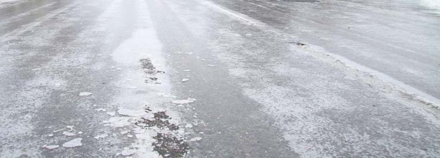
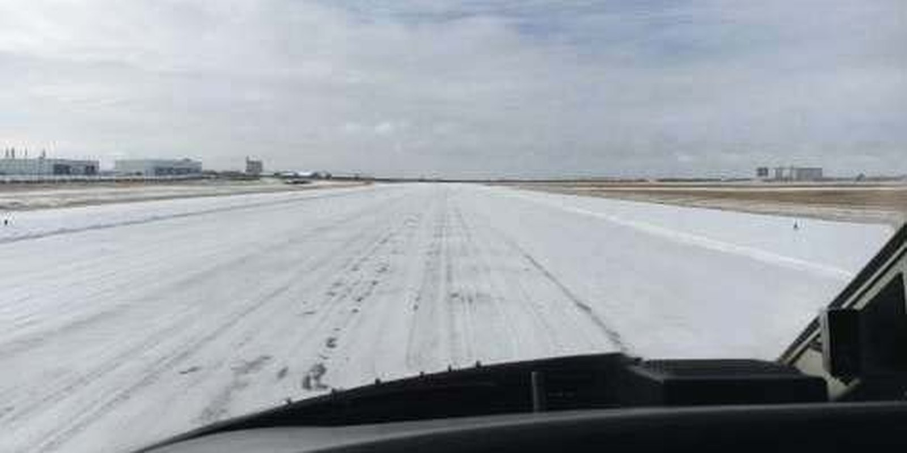
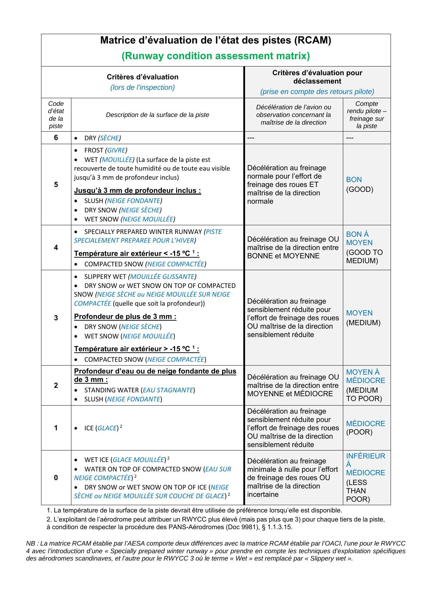
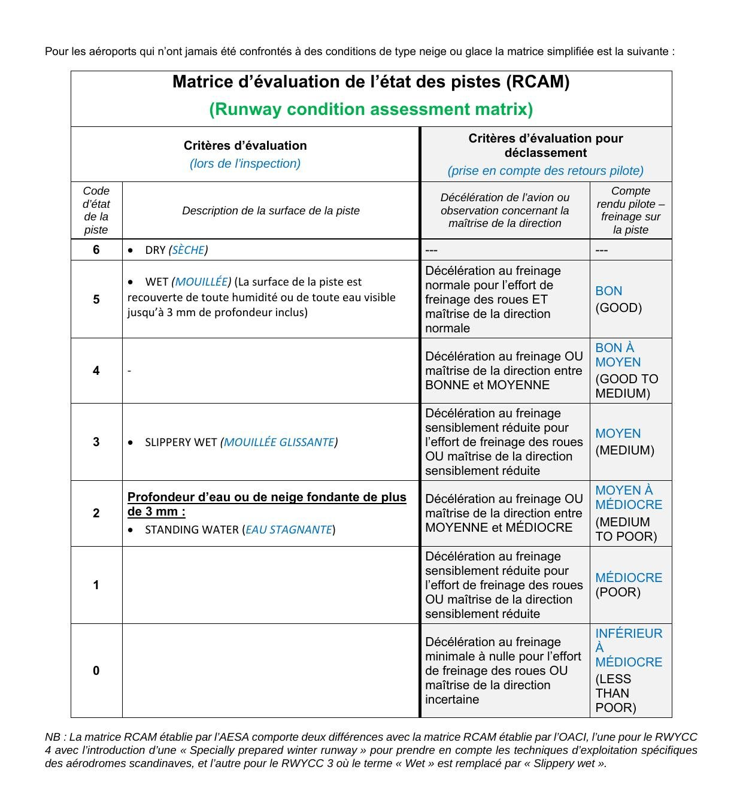
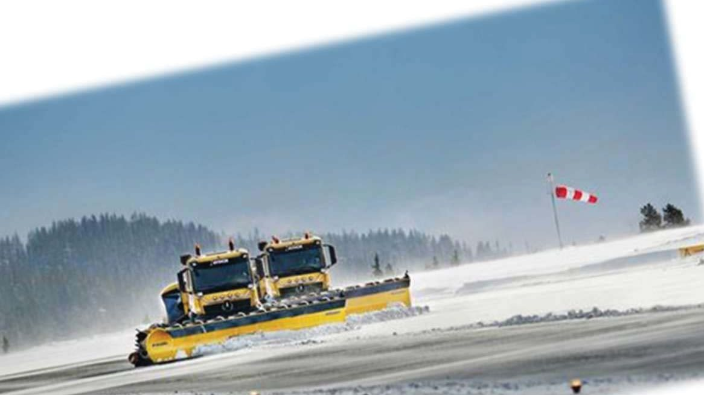
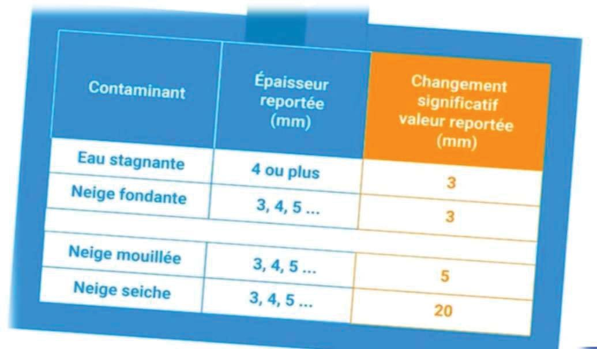
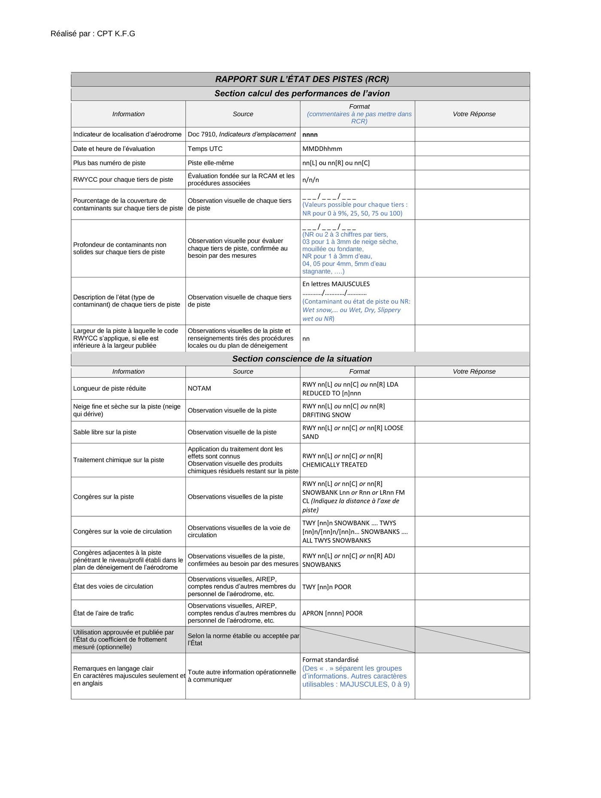
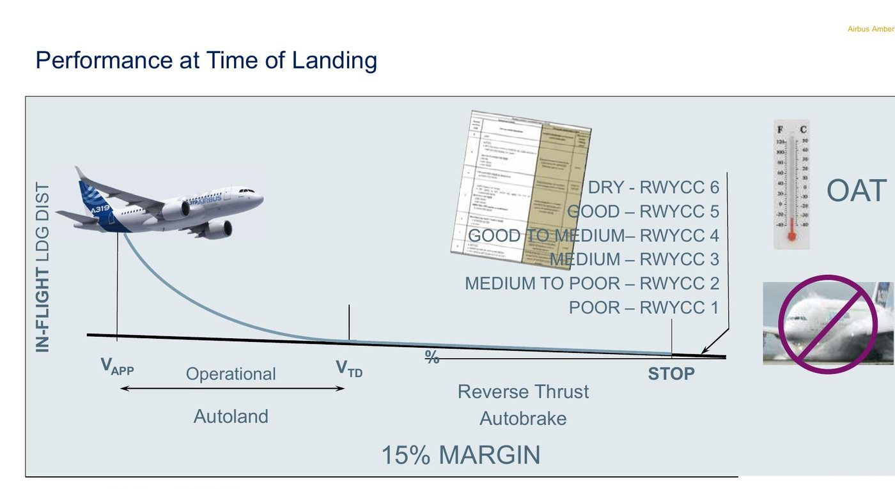
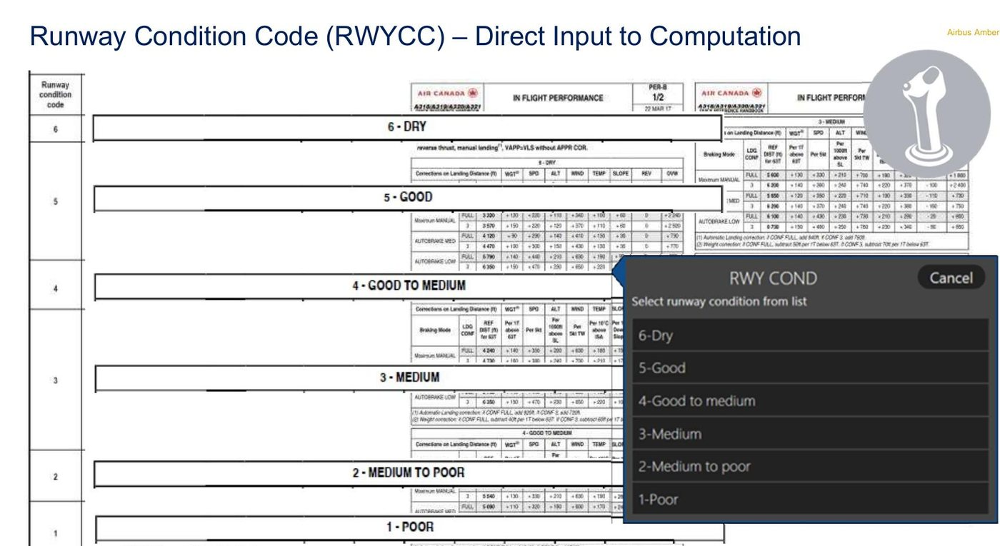
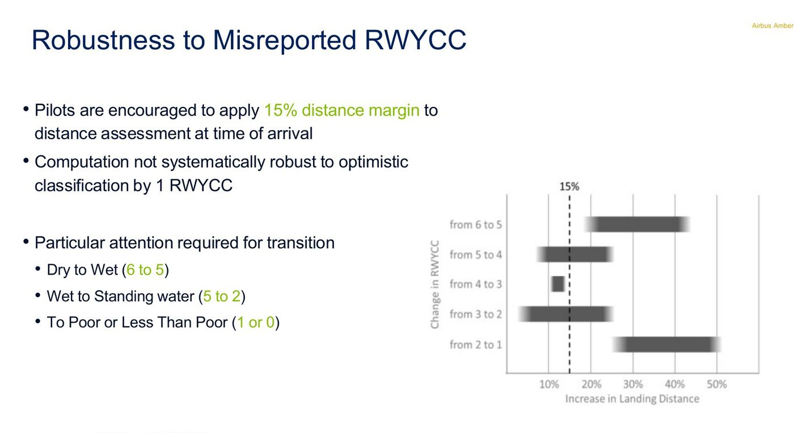

Runway surface condition assessment and reporting with the GRF: why it exists, contaminants, the RCAM and RWYCC, pilot reports, the RCR, SNOWTAM and ATS — and what it means for aircraft performance. Definitions as interactive flip cards.
10 lessons · 4 modules · about 2 hours
Training material only. It does not replace the Aircraft Flight Manual, FCOM, QRH, MEL or the Domestic Airlines Operations Manual, which always take precedence.
Lesson 01: Why the GRF? Runway Excursions and ICAO Objectives
Lesson 1 of 10 · about 12 min
Learning objectives
Explain why runway excursions drive the GRF.
Describe the limits of the former reporting system based on friction measurements.
State the objectives pursued by ICAO.
Why the GRF?
Course overview
This course follows the company GRF syllabus — about 4 h 15 in the classroom:
Module
Subject
Time
1
The Global Reporting Format (GRF)
1 h 50
2
The Runway Condition Assessment Matrix (RCAM)
60 min
3
The Runway Condition Report (RCR)
60 min
4
Transmission of the information (SNOWTAM, ATS, ATIS) and aircraft performance
25 min +
—
Evaluation
30–45 min
Five questions guide the course: Why the GRF? What are the impacts? How is the RCAM used? How is an RCR written? Which information goes to whom?
Runway excursions
Runway and taxiway excursions represent about 22 % of all accidents and are the third accident category by number of victims (IATA runway safety analysis 2010–2014, 415 accidents over five years). An excursion can be lateral (veer-off) or longitudinal (overrun), at take-off or at landing — about 90 % of them at landing.
Braking: the tyre-to-runway interface is where the runway condition becomes aircraft performance. Source: Domestic Airlines GRF course.
Limits of the former system
Runway friction was estimated with a friction measuring device (μ) and reported as good, medium-good… (Annex 14, Attachment A).
Several devices existed; at least three measurements were needed and an average μ was transmitted.
The readings were not reliable and not correlated with aircraft braking performance, and there was no consensus on their use.
Aircraft braking performance depends on the runway surface condition and on the environmental conditions: the quality of the contamination information is essential. The European Action Plan for the Prevention of Runway Excursions (EAPPRE) asked aerodromes for contaminant removal programmes, assessment whenever contamination appears or changes, and robust communication.
What ICAO wants
Improve safety for aircraft operating on runways, in particular contaminated runways.
Provide a harmonised method to assess and report the runway surface condition, worldwide, linked directly to aircraft performance data.
Make the report interpretable by pilots and reliable thanks to pilot feedback.
The regulatory chain: ICAO Annex 14 and Annex 15, PANS-Aerodromes and Circular 355 for aerodromes; Annexes 6, 8 and 15 for the other actors; in Europe, regulations (EU) 2018/1139 and 139/2014. More information: icao.int/safety/Pages/GRF.aspx.
Implementing the GRF concerns aerodrome operators, air traffic services, aeronautical information services, aircraft manufacturers and operators. Source: Domestic Airlines GRF course.
Applicability
The GRF was planned for 5 November 2020 and became applicable worldwide on 4 November 2021 (EASA rules from 12 August 2021).
Key takeaways
Runway excursions ≈ 22 % of accidents, mostly at landing.
Friction measurements were unreliable and not correlated with aircraft braking.
GRF: one harmonised, performance-related method to assess and report the runway condition, reinforced by pilot reports.
Knowledge check
What does ICAO pursue with the GRF? (choose the best answer)
Each State develops its own criteria
A harmonised method linked to aircraft performance, improving safety on contaminated runways
Removing all risks of runway contamination
More friction measurements
Answer: B. Harmonised assessment and reporting, directly usable for aircraft performance — to improve safety.
Module 1 · The Global Reporting Format
Lesson 02: The New System: Actors and Key Changes
Lesson 2 of 10 · about 12 min
Learning objectives
Describe the role of each actor in the GRF.
List the main changes: definitions, RCAM, RWYCC, RCR, SNOWTAM.
Describe the general process from inspection to publication.
Every actor has a role.
Who does what
Actor
Role
Aerodrome operator
Inspects the movement area, assesses the surface, assigns the RWYCC with the RCAM, writes the RCR, requests the SNOWTAM, collects pilot reports
Air traffic services (ATS)
Pass the RCR to pilots by radio and ATIS; pass AIREPs to the aerodrome operator
Aeronautical information service (AIS)
Publishes the SNOWTAM (new format)
Pilots
Use the information; report the braking action (AIREP) to ATS
Aircraft manufacturer
Provides performance data linked to the RWYCC (Annex 8)
Airline
Assesses aircraft braking performance; updates its procedures (Annex 6)
Pilots use the RCR for the landing performance assessment and send AIREPs on braking action. Source: Domestic Airlines GRF course.
Key definitions
Tap a card to turn it over.
The main changes
New definitions: four runway surface states (dry, wet, slippery wet, contaminated) and standard contaminant descriptors.
RCAM to assign a RWYCC per third, and compare the aerodrome's observations with pilot reports.
RCR, evolving with the situation and used by pilots, published all year — not only in winter.
New SNOWTAM format, new information content and new update criteria.
Friction measurements are no longer reported.
The general process
Runway inspection and analysis of the observations (coverage criteria).
Characterisation of the situation with the RCAM: initial RWYCC (Module 2).
Collection of data (AIREPs…) and adjustment of the RWYCC (Module 2).
Writing the RCR (Module 3).
Transmission of the information (SNOWTAM, ATS, ATIS) and follow-up of its accuracy (Module 4).
GRF summary flowchart: from the inspection to the RWYCC, the RCR and its transmission. Source: Company GRF documentation — summary flowchart.
Key takeaways
Aerodrome assesses and reports; ATS and AIS transmit; pilots use and report.
New: RCAM, RWYCC per third, RCR all year, new SNOWTAM, no friction values.
May runway inspectors use their own definitions of the surface condition in a GRF RCR?
Yes
No — standard descriptors are mandatory
Only in summer
Only for the situational awareness section
Answer: B. The GRF uses standardised terms and codes only.
Module 1 · The Global Reporting Format
Lesson 03: Runway Surface States and Contaminant Identification
Lesson 3 of 10 · about 15 min
Learning objectives
Define the four runway surface states.
Identify the eight contaminant descriptors from observations and photos.
Explain the impact of the GRF on runway inspection work.
Name the contaminant correctly.
Four runway surface states
Tap a card to turn it over.
Fluid and hard contaminants
Eight descriptors exist (Annex 1 of EU 139/2014). They can be combined to describe the surface — for example dry snow on top of ice.
Tap a card to turn it over.
Contaminants in pictures (1)
Dry snow on an apron: light and loose, it falls apart when you blow on it. Source: Domestic Airlines GRF course.Wet snow: ice crystals with liquid water — compact, but no water runs out. Source: Domestic Airlines GRF course.Compacted snow on a runway after a snowfall without decontamination: the vehicle does not sink in. Source: Domestic Airlines GRF course.
Contaminants in pictures (2)
Slush: water runs out when it is squeezed and splashes under the foot. Source: Domestic Airlines GRF course.

Ice: very slippery, not shiny, after hours well below 0 °C. Source: Domestic Airlines GRF course.Wet ice: shiny and wet, after freezing rain when the temperature has just become positive. Source: Domestic Airlines GRF course.
Contaminants in pictures (3)
Frost: granular texture, more deposit on metal parts; calm wind, ground well below 0 °C. Source: Domestic Airlines GRF course.Standing water: only in puddles, deeper than 3 mm, positive temperature. Source: Domestic Airlines GRF course.
Exercise: identify the contaminant
Read the clues, decide, then tap to check.
Impact on the aerodrome operator
Before: in case of doubt a friction measurement or decelerometer was used. Now: the surface is described precisely with predefined codes and terms; friction values are not reported.
The operator issues the NOTAM / SNOWTAM, monitors the runway and performs as many inspections as necessary (ADR.OPS.B.037).
Contamination is no longer only a winter problem: an RWYCC and an RCR are published all year.
New procedures, new training, consistency between reality and what is published, consistency between actors, reliable exchanges with ATS (AIREP, RCR) and AIS (NOTAM, SNOWTAM).
Decision aids
Use the meteorological data and the reports of previous inspections to identify the contaminant. Pilots should know these descriptors: they are the words of the RCR.
Key takeaways
Four states: DRY, WET (≤ 3 mm), SLIPPERY WET, CONTAMINATED.
Eight descriptors: standing water, slush, wet snow, dry snow, compacted snow, frost, ice, wet ice — can be combined.
Identification uses observation, temperature and the history of the day.
Knowledge check
After freezing rain, the surface is shiny and wet; the temperature has just become positive. The contaminant is:
Frost
Wet ice
Slush
Standing water
Answer: B. Freezing rain followed by a rise above 0 °C gives wet ice.
Module 2 · The RCAM
Lesson 04: The RCAM — Key Elements
Lesson 4 of 10 · about 12 min
Learning objectives
Describe the structure of the RCAM.
Read the matrix to assign a RWYCC.
Recognise the different RCAM versions.

Contaminant, depth, temperature → RWYCC.
What the regulation requires
When contaminants are present, the aerodrome operator (ADR.OPS.B.037) inspects the runway, assigns a RWYCC per third with the RCAM, and uses AIREPs to trigger a reassessment. The number of inspections is not fixed: as many as necessary.
Structure of the matrix
Assessment criteria (at the inspection): runway surface description — contaminant type, depth, outside air temperature → RWYCC 6 to 0.
Downgrade assessment criteria: aeroplane deceleration or directional control observation, and the pilot report of braking action (AIREP).

Runway Condition Assessment Matrix — French version used in the course. Source: RCAM (company GRF documentation).
The codes
RWYCC
Runway surface description
AIREP
6
DRY
—
5
FROST · WET (≤ 3 mm) · up to 3 mm: SLUSH, DRY SNOW, WET SNOW
GOOD
4
COMPACTED SNOW at −15 °C OAT or colder (also specially prepared winter runway)
GOOD TO MEDIUM
3
SLIPPERY WET · DRY or WET SNOW on top of COMPACTED SNOW · more than 3 mm: DRY SNOW, WET SNOW · COMPACTED SNOW above −15 °C
MEDIUM
2
More than 3 mm of STANDING WATER or SLUSH
MEDIUM TO POOR
1
ICE
POOR
0
WET ICE · WATER on top of COMPACTED SNOW · DRY or WET SNOW on top of ICE
LESS THAN POOR
Reading examples
Find the code in the matrix, then tap to check.
RCAM versions
Vertical or horizontal presentation, with or without snow and ice conditions. A simplified matrix exists for aerodromes never exposed to snow or ice.
The matrix chosen must be integrated into the local procedures of the aerodrome operator.
No RCAM refers to friction coefficient measurements; non-meteorological contaminants (sand, oil, rubber…) are not in the matrix.
Horizontal presentation of the RCAM (EASA). Source: EASA AMC1 ADR.OPS.B.037, from the company GRF course.

Simplified RCAM for aerodromes never exposed to snow or ice. Source: RCAM (company GRF documentation).
6 dry · 5 wet/frost/thin snow · 4 compacted ≤ −15 °C · 3 slippery wet/deep snow · 2 > 3 mm water or slush · 1 ice · 0 wet ice.
Different presentations give the same codes; no friction values in the RCAM.
Knowledge check
Which RWYCC corresponds to more than 3 mm of standing water?
5
3
2
1
Answer: C. Standing water or slush deeper than 3 mm → RWYCC 2 (MEDIUM TO POOR).
Module 2 · The RCAM
Lesson 05: Applying the RCAM — Thirds, Coverage, Depth and Temperature
Lesson 5 of 10 · about 12 min
Learning objectives
Define the runway thirds, including displaced thresholds and reduced length or width.
Apply the 10 % and 25 % coverage criteria and the reported coverage values.
Apply the 3 mm depth threshold and the −15 °C criterion.
Thirds, coverage, depth.
Why runway thirds?
Information is collected per third to decide whether the matrix applies and to let pilots prepare for braking and directional control in each part of the runway.
The thirds are based on the runway length available for the take-off run (TORA); stopways, clearways and displaced thresholds are not considered.
The first third starts at the end with the lower runway designator (for runway 08/26, at the beginning of 08, even if 26 is in use).
If part of the length or width is declared unusable, the thirds and the coverage are assessed on the usable part only.
Runway with reduced length: the thirds are defined on the remaining length (here 1,800 m). Source: Domestic Airlines GRF course.
The depth is measured precisely enough to know whether the 3 mm threshold is crossed — not to the millimetre. Below 3 mm a fluid contaminant drains from the tyre footprint (no dynamic aquaplaning); above 3 mm the runway is contaminated and aquaplaning becomes possible. Dry and wet snow use the same 3 mm threshold.
Measured depth → reported depth: wet runway 1–3 mm NR; standing water ≥ 4 mm measured value; slush, wet snow, dry snow 1–3 mm 03, ≥ 4 mm measured value. Source: Domestic Airlines GRF course.
Temperature
Compacted snow is RWYCC 4 at −15 °C or colder, RWYCC 3 above. The −15 °C value comes from historical industry testing and is probably conservative; braking action correlates better with the surface temperature than with the OAT.
Runway 04/22 with TORA 3,000 m (RWY 04 ASDA 3,100 m). Which length defines the thirds?
3,100 m
3,000 m (TORA)
3,100 m for 04 and 3,000 m for 22
LDA only
Answer: B. The thirds are defined on the TORA; stopways and clearways are not used.
Module 2 · The RCAM
Lesson 06: Pilot Reports (AIREP) and Adjusting the RWYCC
Lesson 6 of 10 · about 12 min
Learning objectives
Describe the AIREP and its role in the GRF.
Apply the reassessment triggers.
Apply the upgrade and downgrade rules for the RWYCC.
Report braking action.
Special air-reports of braking action
Pilots report braking action on the frequency to the controller, using the standard RCAM terms. An AIREP depends on the aircraft's braking and control during the landing, applies to part of the runway, and may differ from one aircraft to another (for example a Q400 followed by a B777). There is no AIREP for RWYCC 6.
Tap a card to turn it over.
Three situations
First inspection of the day, no pilot report yet: inspect, apply the matrix, adjust with AIREPs when they arrive, publish.
A RWYCC is already published and the situation evolves (AIREP different from the published code…): inspect, apply the matrix, adjust, publish.
After a decontamination action (chemical treatment, snow clearing): inspect, apply the matrix, adjust with new AIREPs, publish.

After snow clearing or chemical treatment, the runway is inspected again and the RWYCC reassessed. Source: Domestic Airlines GRF course.
When must the runway be reassessed?
A new assessment of the surface (new inspection) is required after two consecutive POOR AIREPs, or one LESS THAN POOR AIREP (AMC1 ADR.OPS.B.037(c)). AIREPs are used to trigger reassessments, confirm the initial assessment, and adjust the RWYCC.
Upgrade and downgrade
Tap a card to turn it over.
Worked example 1 — snow
Runway 04R/22L, 22L in use, 3,000 m, OAT +3 °C. Third 1: dry snow 4 mm, 75 %. Third 2: dry snow 1–3 mm, 50 %. Third 3: wet snow 3 mm, 50 %.
Decide, then tap.
Worked example 2 — water
Same runway, OAT +10 °C. Third 1: dry. Third 2: water 2 mm, 40 %. Third 3: standing water 4 mm, 90 %.
Decide, then tap.
Key takeaways
AIREP terms = RCAM braking action terms; no AIREP for 6.
Reassess after 2 consecutive POOR or 1 LESS THAN POOR.
Downgrade with evidence; upgrade only from 0 or 1, up to 3, with evident proof.
Knowledge check
The visual assessment gives RWYCC 1. Can the operator upgrade it?
No, never
Yes, up to 3 at most, with evident proof defined in the procedures
Yes, to 5 with one GOOD AIREP
Only to 6
Answer: B. Upgrades are possible only from 0 or 1, up to 3, with evident proof.
Module 3 · The RCR
Lesson 07: The RCR — Principles and Triggers
Lesson 7 of 10 · about 12 min
Learning objectives
Describe the two sections of the RCR.
List the events that require a new RCR.
Apply the significant change criteria for coverage and depth.
A significant change means a new RCR.
Two sections
Tap a card to turn it over.
Content of the RCR and a SNOWTAM example: performance section per third, then situational awareness. Source: Airbus, EASA GRF webinar (2021).
When to write an RCR
A contaminant appears (e.g. water on a dry runway).
The contaminant type changes (e.g. thin dry snow turns to water).
The reported coverage changes.
The reported depth changes significantly.
New relevant information arrives: AIREPs, weather, decontamination, one LESS THAN POOR or two consecutive POOR.
The need for an RCR triggers an inspection — and an inspection can trigger an RCR. Inspections are either scheduled or "special".
Coverage changes
Is a new RCR needed? Tap to check.
Depth changes
A change of depth is significant when it changes the RWYCC, or when the increase of the reported depth reaches a fixed value:

Significant change of the reported depth: standing water 3 mm · slush 3 mm · wet snow 5 mm · dry snow 20 mm. Source: Domestic Airlines GRF course.
New RCR: new contaminant, type change, reported coverage change, significant depth change, new information.
Significant depth change: water 3 mm, slush 3 mm, wet snow 5 mm, dry snow 20 mm.
Knowledge check
The coverage on a third increases from 80 % to 100 %. Is a new RCR required for this reason?
Yes
No — the reported coverage remains 100
Only at night
Only if the RWYCC is 6
Answer: B. The reported value is already 100: no change in the RCR.
Module 3 · The RCR
Lesson 08: Writing the RCR
Lesson 8 of 10 · about 14 min
Learning objectives
Fill in the performance section in the correct format.
Use the standard expressions of the situational awareness section.
Write RCRs for typical situations.
Capitals, codes, thirds.
Performance section — format
Item
Format
Example
Aerodrome location indicator (Doc 7910)
nnnn
DAAG
Date and time of assessment (UTC)
MMDDhhmm
01030723
Lower runway designator
nn[L/C/R]
05
RWYCC per third
n/n/n
5/5/2
Coverage per third
NR, 25, 50, 75, 100
100/100/75
Depth per third
NR or 2–3 digits
NR/NR/06
Contaminant per third
CAPITALS
WET/WET/STANDING WATER
Width to which the codes apply, if less than published
nn
30

RCR form — aeroplane performance calculation section and situational awareness section. Source: Company GRF documentation — RCR form.
Typical RCRs
Write it on paper, then tap to compare.
Situational awareness section
RWY nn LDA REDUCED TO [n]nnn · RWY nn DRIFTING SNOW · RWY nn LOOSE SAND · RWY nn CHEMICALLY TREATED
RWY nn SNOWBANK Lnn / Rnn / LRnn FM CL · TWY nn SNOWBANK · RWY nn ADJ SNOWBANKS
TWY nn POOR · APRON nnnn POOR · free-text remarks
UPGRADED or DOWNGRADED to report an adjustment of the RWYCC.
Only CAPITAL letters and digits. In the performance section, a space separates the items and "/" the thirds; in the situational awareness section a full stop separates the groups. Example: RWY 22L LDA REDUCED TO 1450. RWY 02R LOOSE SAND. TWY B POOR.
The drafting aid
RCR drafting aid: launch, coverage criteria per third, characterisation of each third with the RCAM, RCR and SNOWTAM. Source: Company GRF documentation — RCR drafting aid.
Capitals and digits only; space between items, full stop between situational awareness groups.
UPGRADED / DOWNGRADED report an adjustment.
Knowledge check
How is a whole wet runway (less than 3 mm) reported?
6/6/6 DRY
5/5/5 100/100/100 NR/NR/NR WET/WET/WET
2/2/2 STANDING WATER
5/5/5 NR/NR/NR 03/03/03
Answer: B. WET, RWYCC 5, coverage 100, depth not reported.
Module 4 · Transmission and Performance
Lesson 09: Transmission of the Information — SNOWTAM, ATS and ATIS
Lesson 9 of 10 · about 12 min
Learning objectives
Describe the SNOWTAM rules (format, language, validity, replacement).
Apply the SNOWTAM publication criteria.
Describe how ATS and ATIS pass the RCR to pilots and how AIREPs come back.
SNOWTAM, radio and ATIS.
The information flow
The aerodrome operator sends the RCR to the air traffic services and requests a SNOWTAM from the aeronautical information service. ATS pass the information to pilots by radio and ATIS; pilots send AIREPs back through ATS.
Air traffic services transmit the RCR to pilots and pass their AIREPs to the aerodrome operator. Source: Domestic Airlines GRF course.
Depth: up to 3 mm the tyre drains the fluid (WET, no dynamic aquaplaning); above 3 mm CONTAMINATED and aquaplaning above the aquaplaning speed. Some evidence shows slippery conditions even below 3 mm. Source: Airbus, EASA GRF webinar (2021).Coverage: reported for each third; contaminated in terms of performance above 25 %. Source: Airbus, EASA GRF webinar (2021).
Landing — assessment at the time of arrival
The RWYCC is a direct input to the in-flight landing distance computation, together with OAT, approach speed, autoland, autobrake and reverse thrust. A 15 % margin is applied to the in-flight landing distance.

Performance at time of landing: RWYCC 6 to 1, OAT, approach speed, autobrake, reverse thrust — with a 15 % margin. Source: Airbus, EASA GRF webinar (2021).

The RWYCC is selected directly in the performance application (RWY COND list). Source: Airbus, EASA GRF webinar (2021).
Robustness to misreported RWYCC
The computation is not always robust to an optimistic error of one code. Pay particular attention to the transitions dry to wet (6 to 5), wet to standing water (5 to 2) and to POOR or LESS THAN POOR (1 or 0).

Increase in landing distance for an optimistic RWYCC by one code: the transitions 6→5, 5→2 and to 1/0 are critical. Source: Airbus, EASA GRF webinar (2021).
Dispatch and take-off
Dispatch is nominally unchanged. Crosscheck the dispatch result with the landing distance at time of arrival before every flight; compute again in flight only in case of changes (runway, weather or surface condition, failures).
Take-off performance for contaminated surfaces follows EASA AMC 25.1591; some RCAM contaminant types are missing in the data, and a downgraded RWYCC with fluid contaminants needs care — enter both contaminant type and depth, and the RWYCC.
Benefits for operators
Tap a card to turn it over.
Key takeaways
Contaminants: less braking (friction, aquaplaning) and less acceleration (drag).
RWYCC = direct input at time of arrival; add 15 %.
Beware optimistic codes at 6→5, 5→2 and to 1/0; report braking action.
Knowledge check
Which margin is applied to the in-flight landing distance at the time of arrival?
0 %
15 %
40 %
67 %
Answer: B. Pilots apply a 15 % margin to the landing distance assessment at time of arrival.
Training material only. It does not replace the Aircraft Flight Manual, FCOM, QRH, MEL or the Domestic Airlines Operations Manual, which always take precedence.